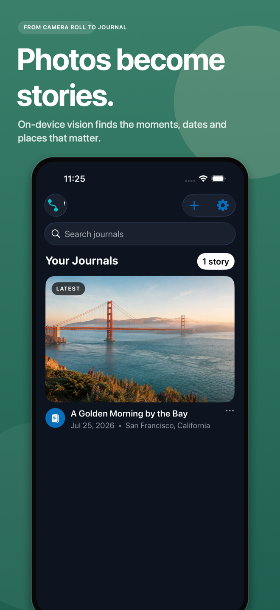
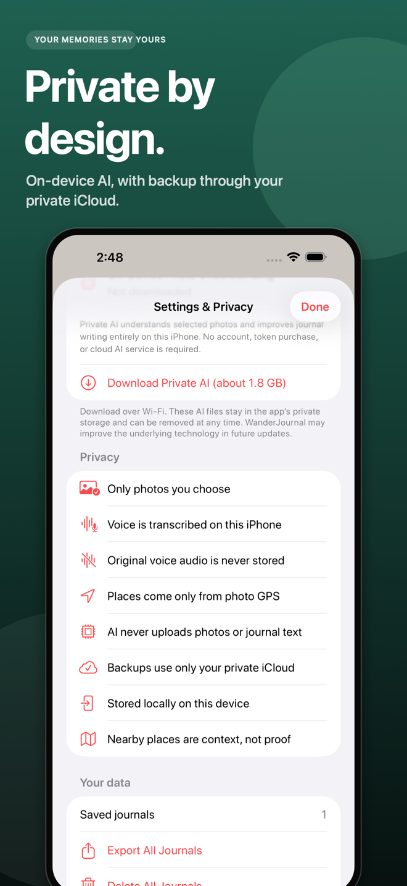

SOUTH TYROL · ITALY
Where the light
found us
We reached the ridge just as the afternoon softened. For a moment, every peak seemed to hold its breath.
WanderJournal turns your photos, voice notes, and passing thoughts into beautifully written travel stories—privately, right on your iPhone.
 Sep 18, 2026
Sep 18, 2026
SOUTH TYROL · ITALY
We reached the ridge just as the afternoon softened. For a moment, every peak seemed to hold its breath.
Your memories stay yours.
FROM MOMENTS TO MEMOIR
Bring the fragments. WanderJournal helps you shape them into something worth returning to.
Type a thought, speak a voice note, or choose a few photos. Start with whatever feels natural.
Private on-device intelligence finds the places, details, and emotional thread—then writes in your style.
Explore your memories through maps, meaningful places, and a journal designed to grow with every trip.
INSIDE WANDERJOURNAL
From the first photo to the final journal, every feature is designed to help you remember more—without giving up your privacy.
Select your photos, add a note or voice memory, and WanderJournal shapes the moments, dates, and places into a journal that still sounds like you.


Photo GPS becomes a visual route, with nearby landmarks and meaningful place context woven into the story.
Add a six-digit passcode to protect the app. The credential stays securely in your iPhone Keychain and is never sent anywhere.
Enter your six-digit passcode to open your private journals.
On-device vision finds the moments, dates, and places that matter.

Understand photos and polish journals privately on your iPhone.

Only the photos you choose, backed up through your private iCloud.

Create beautiful story cards and share them wherever you choose.

PRIVATE BY DESIGN
Photo understanding and journal writing happen on your iPhone. There are no ads, no tracking, and no cloud AI account watching from the sidelines.
Read our privacy promiseYOUR NEXT CHAPTER
Be among the first to turn your travels into stories you’ll keep.
Join early access